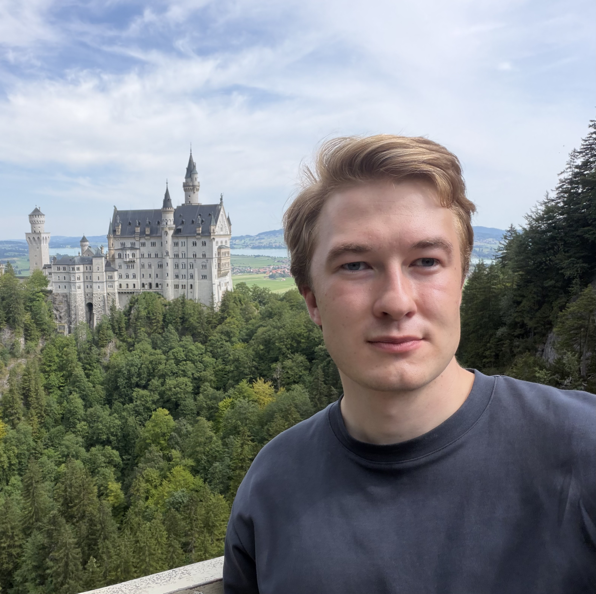

Data Scientist / ML Engineer · Berlin
Roman Kochnev
Hi! I'm a data scientist with an applied math background and industry experience. I like problems where LLMs do more than chat: designing neural networks, reasoning over knowledge graphs, and automating the tedious parts of ML.
I recently finished my M.Sc. in Computer Science at the University of Würzburg and defended my thesis, Enabling Symbolic Reasoning with Advanced RAG Systems, which I wrote at the Bosch Center for Artificial Intelligence (BCAI) in Renningen. I also work as a research assistant at the Computer Vision Lab in Radu Timofte's group, mostly on AutoML and LLM-based neural architecture search.
Publications
-
APOLO: Automatic Prompt Optimization for Ontology Learning
International Semantic Web Conference (ISWC), 2026 · co-first author
* Equal contribution
-
NNGPT: Rethinking AutoML with Large Language Models
Proceedings of the IEEE/CVF Conference on Computer Vision and Pattern Recognition Workshops (CVPRW), 2026 · first author
-
LEMUR 2: Unlocking Neural Network Diversity for AI
Proceedings of the IEEE/CVF Conference on Computer Vision and Pattern Recognition Workshops (CVPRW), 2026
-
LEMUR Neural Network Dataset: Towards Seamless AutoML
arXiv preprint, 2025 · second author
-
Optuna vs Code Llama: Are LLMs a New Paradigm for Hyperparameter Tuning?
Proceedings of the IEEE/CVF International Conference on Computer Vision Workshops (ICCVW), 2025 · first author
-
Intelligent Method for Real Estate Price Prediction in Moscow Using a Machine Learning Model
Proceedings of the 75th Days of Science of NUST MISIS Students, 2020 · ISBN 978‑5‑907227‑11‑8
Experience
-
2026–2026
Data Science Researcher (Master's Thesis)
Bosch Center for Artificial Intelligence (BCAI), Renningen, Germany
LLMs for ontology learning: developed APOLO, a prompt-optimization framework accepted at ISWC 2026; built GRAIL, a reasoning-focused QA benchmark for RAG and GraphRAG; designed OWL2Doc, a multi-agent pipeline for text-ontology data.
-
2025–present
Research Assistant (HiWi)
Universität Würzburg, Würzburg, Germany
AutoML with LLMs in the Computer Vision Lab: first author of NNGPT (CVPRW 2026); co-developer of the LEMUR dataset; first author of “Optuna vs Code Llama” (ICCVW 2025).
-
2022–2023
Software Developer and Analyst
ROSBANK, ex Société Générale Group, Moscow
Built and maintained ML models for core banking use cases; delivered analyses and reports from closed internal data; mentored interns and junior colleagues.
-
2021–2022
Data Analyst
Glowbyte Consulting, Moscow
Oracle PL/SQL development, Power BI dashboards, and A/B testing for top-tier banks and major food retail chains.
Education
-
2023–2026
M.Sc. Computer Science
Julius‑Maximilians‑Universität Würzburg, Germany
Thesis: Enabling Symbolic Reasoning with Advanced RAG Systems, written at the Bosch Center for Artificial Intelligence (BCAI) in Renningen, Germany.
-
2020–2022
M.Sc. Applied Mathematics and Computer Science
Lomonosov Moscow State University, Moscow, Russia
Thesis: Construction of a Disorder Predictor in Non-stationary Electroencephalography Time Series.
-
2016–2020
B.Sc. Applied Mathematics
National University of Science and Technology MISIS, Moscow, Russia
Thesis: Intelligent Method for Real Estate Price Prediction in Moscow Using a Machine Learning Model.
Skills
Programming
Python, SQL, Java, C++
ML / Deep Learning
PyTorch, Hugging Face Transformers, Scikit-learn, PEFT/LoRA, NumPy, Pandas, OpenCV
LLM & AutoML
Prompt Optimization (DSPy, GEPA), RAG Pipelines, Ontology-based Reasoning, Neural Architecture Search
MLOps & Infra
Docker, Azure, MLflow, Kubernetes, Git
Tools
Jira, Confluence, Power BI, Excel, LaTeX
Spoken
English (fluent), German (B1), Russian (native)